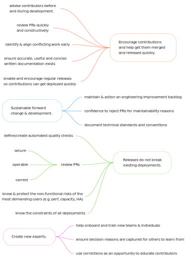

Stage 3: Maintainers in Multiple Teams
This page explains the third stage of the inner source pyramid.
Multiple teams need to make regular changes to the capability via a consensus mechanism. For consensus to be fast at least one person in every regularly contributing team must be an expert “maintainer”: taking the time to build relationships and trust with the experts in the other teams.
Why do you need to be at this stage?
This stage is difficult to do well, and requires several process changes and extra technical responsibilities. Therefore it is important to validate that being in this stage is necessary for you before attempting it as for most capabilities stage 2 is an easier sweet spot. There are 3 common reasons to require this stage:
- Velocity: such a high rate of capability change are required from multiple dedicated teams in different divisions that a dependency on a single ‘host’ team would be an unacceptable bottleneck.
- Control: the capability is so critical in a predictable delivery, operational response, or architectural strategy sense that multiple divisions require a high level of control/expertise to safeguard against external factors.
- Maturity: a mature capability (or most commonly a library in this case) has widespread usage and requires little change other than routine security maintenance. The original authors have moved over time into multiple different teams and the low rate of changes means few new experts have emerged and team ownership if assigned at all is nominal.
Why is this stage difficult?
There are 3 challenges that make this stage difficult:
The relative importance of tackling each of these problems depends on the reason you want to operate in this stage.
- If the reason is velocity, the priority is maximising divisional independence as even a small collaboration overhead required between divisions adds up to a big overhead if there is a high rate of change.
- If the reason is control, the priority is ensuring a robust and clear consensus mechanism between divisions for any significant change so each is confident they have a strong enough influence over it’s future.
- If the reason is maturity the most acute challenge is usually ownership of unpopular work like security maintenance.
This document outlines the usual solutions to these challenges. You should start by recognising the inner source maintainer and owner responsibilities.
Who are “Maintainers”?
Maintainer is the term given to a technical expert of the inner sourced capability who helps others.
- They are an expert. Not at ‘being a maintainer’, but at whatever they are maintainer of.
- They are all different, with diverse areas of expertise. But they are all trusted to make few mistakes. That is earned by practice (having previously learnt from making lots of mistakes!).
- The maintainer responsibility is about spending time lending that expertise to others (specifically, contributors) to help them make less mistakes themselves.
- No-one is a full-time maintainer, it is an additional responsibility alongside their ‘normal’ role. It is usually recognised to take 10-20% of your working time (e.g. 1-2 days of a 2 week sprint).
Maintainer Objectives
All maintainers share the same objectives:
- Evangelise capability usage to solve the correct problems.
- Encourage contributions, and facilitate getting them merged and released quickly.
- New releases do not break any existing deployments.
- Forward change and development is sustainable (i.e. not just accruing technical debt).
- Create new experts to replace maintainers who leave.
Since all maintainers have different expertise they will contribute to these objectives in different ways. For example:

How Do You Become a Maintainer?
How new maintainers are nominated and recognised as such should be agreed by the existing maintainer group of an capability. It is usually accompanied by an elevated set of repository privileges to reflected their trusted status (e.g. rights to approve & merge PRs into protected main or release branches).
There are usually 2 pre-requisites to become a maintainer:
- Trusted not to make many mistakes. It is important to note this does not mean they are expert at everything within their domain! It means they have the knowledge and experience to know when they need to ask others for a 2nd opinion, but enough confidence to advise and progress independently if safe to do so.
- Can contribute their time. Being an expert is not enough to be a maintainer – you must also be realistic about the time commitment required: to align with other maintainers; to understand the different deployment topologies; to advise contributors and review their contributions. This time commitment is usually 10-20% of your working time (e.g. 1-2 days of a 2 week sprint).
How Many Maintainers are Required?
How many maintainers you need will depend on your own context and circumstances, but commonly this is a group of between 4-8.
- Maintainers need to know and trust each other, and align on significant changes – this gets progressively harder as the group gets larger.
- There need to be enough maintainers to share the work required, including times when several maintainers may be out of the office or too focused on a specific deliverable to help others.
- To promote divisional independence a maintainer in each regularly contributing team is desirable
In practice the number of potential candidates with the time, level of expertise and motivation required to act as a maintainer is usually the limiting factor.
Capability Owner
Our experience is that almost all successful capabilities in stage 3 have clear ownership with a named individual as a capability owner. An owner will:
- Use community leadership, process design and automation to improve the quality & efficiency of maintainer collaboration.
- Define, agree, communicate and action the capability’s technical and functional strategic path.
- Promote and action the tasks and projects required to optimise the capability sustainability and success in the longer-term.
In other words they are responsible for ensuring maintainers work effectively together (1), with an aligned vision of capability forward strategy (2), while protecting the capability long-term sustainability (3). Identifying the optimum owner is an important consideration as the maintainer team starts to span more than one team.
Back to the Challenges…
Having an effective capability owner and maintainer team is required to tackle the key challenges of operating your capability in stage 3, with common solutions described in the following pages:
Stage 2 - Guest Contributions